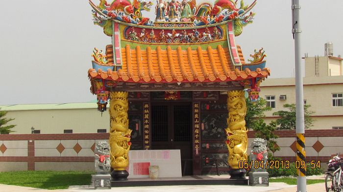
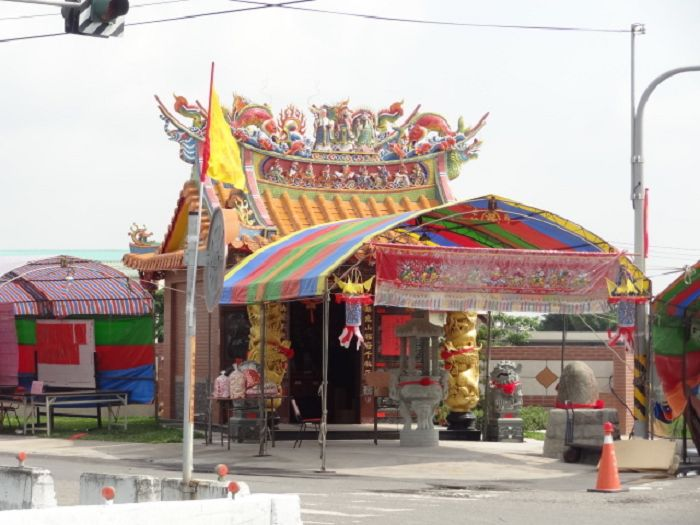
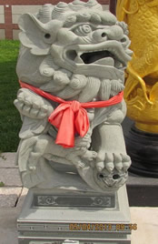
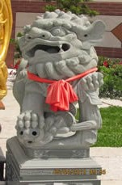
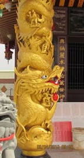
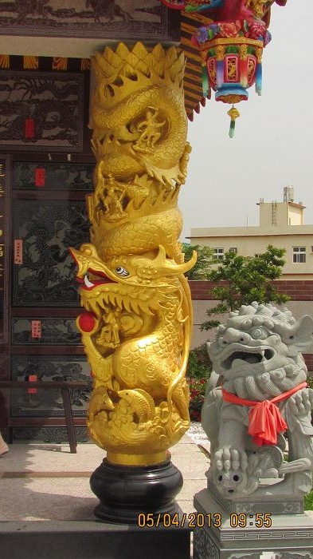
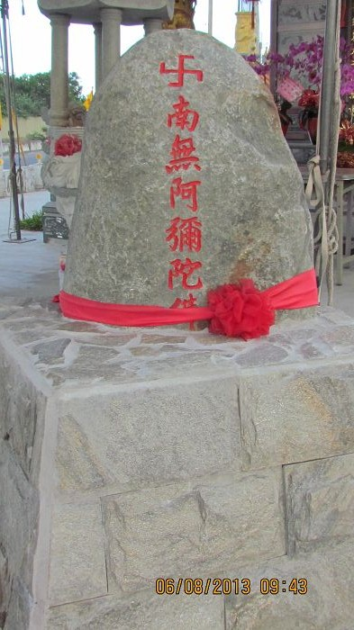
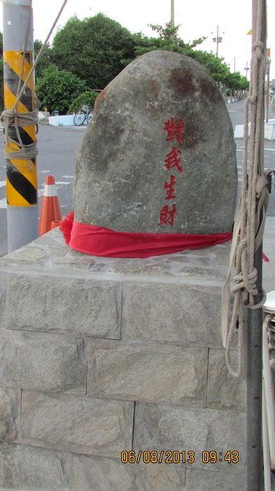

龍興宮
我們來到了位於德興村最西邊的一間福德祠，原本的福德祠小小一間，而且有點占用到道路...不過，現在它重建了~
看看!!左邊未開放參拜時十分的漂亮~
再看看右邊的，其實當天有許多人，只不過被我們負責拍照了組員給忽略了~

↑圖為龍興宮尚未開放前的樣子 |

↑圖為龍興宮重建完全完工後模樣 |

↑獅子下方有一隻小獅子，由此可知牠是母獅。 |

↑獅子下方無小獅子，所以就可以知道他是公獅。
|
龍興宮門口有著可愛又可以避邪的石獅。自古中國人重
男輕女的觀念一直被反映在建築上，男尊女卑，男左女右，所以嘍！以神明的方位來看，公獅在左邊，頸佩頸圈與鈴鐺比較威武雄壯，雄糾氣昂，腳玩弄繡球彩帶；
母獅在右邊，溫柔深情，腳扶幼獅或隱於於母獅之下，則顯溫柔情深和樂融融的氣氛。
↖圖為龍興宮石獅 |
龍柱又稱「蟠龍柱」，指的是未升天的龍，所以盤繞在柱子上。台灣寺廟的龍柱發展久遠，在風格上可看出時代特色，一般來說，早期的龍柱柱徑較小，雕工較樸拙；愈到近代龍柱愈粗大，雕飾亦趨於繁麗。
圖為龍興宮龍柱↗ |
 |
 |
↓下圖為龍興宮的內部與雕飾

↑真是一顆顯眼的石頭 |

↑刻在石頭背面是組員們意外的發現^o^ |
在龍興宮前有一顆石頭，這顆石頭真很特別，石頭正面刻有『卐南無阿彌陀佛 』 ，背面則刻有『對我生財』。
↖位在龍興宮前的一顆特別石頭 |
※龍興宮目前是德興村內最新的一間廟宇，然而它的建造日期沒人知道，也無人知曉它何時重建重修的，畢竟原本小小的一間福德祠，不太起眼，而現今它變得如此華美，有路過此地的人不妨停下腳步，進去參觀參觀，必定會使你的收穫不少~
<--回德興村首頁
|